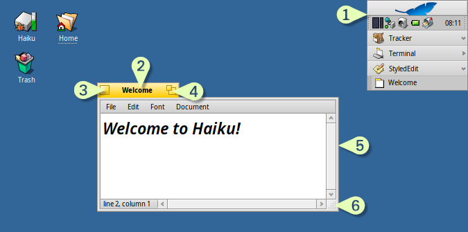
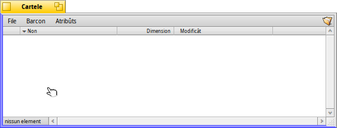
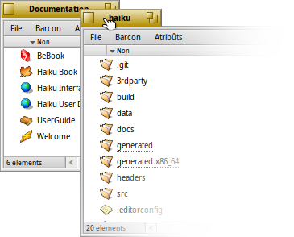
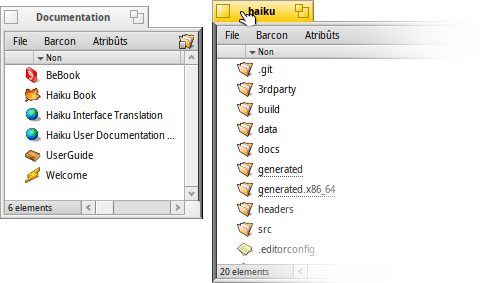
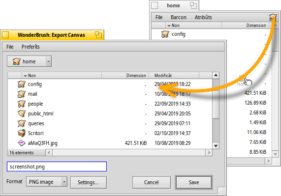

| Tabele |
|
Un mût veloç par spostâ e ridimensionâ i barcons Intassâ e intasselâ (Stack & Tile) I panei vierç e salve Replicants |
Interface grafiche di Haiku
La interface utent grafiche di Haiku e je une part integrante dal sisteme. A diference dai sistemis operatîfs simil Unix, no si à un gjestôr dai barcons separât e l'inviament su shell a rie di comant nol è pussibil. Jessint Haiku rivolt al utent di scritori, cheste ultime funzionalitât no je considerade necessarie.
Viodût che al è probabil che tu vedis provât altris ambients grafics, saltin lis robis standard come i menù, i menù contestuâi cul clic diestri, il strissinâ e molâ e vie indenant. Viodin invezit cualchi aspiet unic de interface grafiche di Haiku.
A son dome pocjis robis, inte interface utent di Haiku, che no son scontadis e a meretin une spiegazion.
Il Deskbar al è il menù "Start" e la sbare des ativitâts di Haiku, se ti plâs viodile cussì. Viôt l'argoment Deskbar.
- La lenghete zale e ufrìs plui che nome il non dal program o un non dal file dal document:
- Tu puedis movile tignint fracât il tast MAIUSC intant che tu lu strissinis suntune altre posizion, permetint cussì di intassâ un numar di barcons e di passâ tra un e chel altri in maniere comude gracie al lôr non su pe lenghete.
- Tu minimizis un barcon cuntun dopli clic su pe sô lenghete (o cun CTRL ALT M). Un barcon cussì platât al pues jessi doprât gracie ae sô vôs tal Deskbar o al Twitcher.
- Tu puedis inviâ un barcon daûr di chei altris, cuntun clic diestri su pe sô lenghete (opûr il so ôr).
Il boton par sierâ.
Il boton par "slargjâ" (o CTRL ALT Z). Te plui part des aplicazions, chest al slargjarà il barcon ae massime dimension cence taponâ il Deskbar (ten fracât MAIUSC par cuvierzi ancje il Deskbar). Dut câs nol è obleât a compuartâsi cussì. I barcons di Tracker, par esempli, si ridimensionaran in mût di adatâsi al lôr contignût.
L'ôr dal barcon. Strissinâ cul clic di çampe al sposte il barcon, strissinâ cul clic di diestre al ridimensione.
L'angul par ridimensionâ.
 Un mût veloç par spostâ e ridimensionâ i barcons
Un mût veloç par spostâ e ridimensionâ i barcons
Spostâ e ridimensionâ i barcons e je une part impuartante de interazion cun diviersis aplicazions in esecuzion contemporanie. Invezit di vê a ce fâ cun la piçule lenghete dal titul zale o l'ancjemò plui fin ôr dal barcon, al esist un mût plui convenient par spostâ un barcon. Cence contâ che, in diplui ae sô piçule dimension, l'angul par ridimensionâ al à un altri limit: al permet di ridimensionâ dome de bande dal angul in bas a diestre.
Strissinâ cul tast diestri un ôr al funzione, ma tu âs di smicjâ ben e sta atent.
Par risolvi chescj fastidis, Haiku al furnìs une soluzion nete, doprant la cumbinazion di tascj pe gjestion dai barcons CTRL ALT a il mouse. Viôt ancje il cjapitul Scurtis e cumbinazions di tascj par cognossi plui scurtis in merit ae gjestion dai barcons.
Tignint fracât jù CTRL ALT si evidenziaran i ôrs dal barcon plui vicins dal pontadôr dal mouse. Sposte il mouse te direzion di un altri ôr par cambiâ l'ôr interessât. Fâ clic e strissinâ cul boton diestri dal mouse al ridimensionarà il barcon inte direzion dal ôr o dai ôrs evidenziâts.
Ten fracât jù CTRL ALT fâs clic e strissine cul boton di çampe dal mouse dulà che tu vûs intun barcon par spostâlu ator. Un clic veloç cul boton diestri dal mouse lu mande daûr dai altris barcons.
Intassâ e intasselâ (Stack & Tile)
La interface utent di Haiku e furnìs une funzionalitât uniche che e sfrute la particolaritât che i barcons a àn une lenghete zale invezit di vê une sbare dal titul largje tant che il barcon. E je clamade "Intassâ e intasselâ", in inglês "Stack & Tile".
Tal esempli chi sot, un barcon di Tracker cui segnelibris al è "intasselât" a çampe di un barcon di WebPositive, chel chi invezit al è intassât cuntun altri barcon di Tracker che al mostre la cartele sorzint haiku. In cheste animazion, l'utent al fâs clic su lis lenghetis dai barcons "intassâts" par puartâ denant prime un e dopo chel altri.

Colegât cussì, il grup di barcons al pues jessi spostât e ridimensionât adun - une disposizion plasevule par lavorâ intun ambient plui orientât ai progjets. Invezit di stâ a cirî il just barcon, sedi il navigadôr di documentazions, un editôr o un barcon dal Tracker o magari ancje une mail che e rivuarde il progjet, metiju ducj adun intassant e intasselant.
Eseguî chest mût di disponi i barcons al è facil: ten fracât OPT intant che tu strissinis un barcon pe sô lenghete, strissinilu dongje di une altre lenghete di un altri barcon o dal so ôr fintremai che al ven evidenziât, daspò mole il boton dal mouse e il lavôr al è fat.
Intassâ e intasselâ al consist di dôs parts colegadis.
|  | "Intassâ" al significhe meti un barcon sore di chel altri, spostant in automatic lis lenghetis zalis in posizion. |
|  | "Intasselâ" al significhe incolâ in orizontâl o in verticâl i barcons. |
La separazion e ven fate te stesse maniere, fracant OPT intant che dal grup si strissine fûr un barcon pe sô lenghete.
I panei vierç e salve
Cuant che si vierç o si salve un file di cualsise aplicazion, si vierç un panel come chest:
Al à dutis lis solitis robis: Une liste di file de cartele atuâl di podê sielzi, e tal câs di un panel par salvâ, un cjamp di test par inserî un non di file e un menù a tende pai diviers formâts di file e lis lôr impostazions.
Tu puedis lâ tes cartelis superiôrs cul menù a tende parsore de liste di file.
Se tu âs za viert un barcon di Tracker cu la posizion dal file, al baste strissinâ o cualsisei file o la rapresentazion de cartele (p.e. il simbul in alt a drete te sô sbare dai menù) sul panel. Chest al puarte il panel dret te gnove posizion.
Scurtis di tastiere
Tantis scurtis tai panei vierç e salve a son lis stessis dopradis in Tracker. Di là dai comants che a son ancje disponibii cul menù , indi son un pâr che no son scontâts:
| ALT N | Al cree un gnove cartele. | |
| ALT E | Ti permet di cambiâ non ae vôs selezionade. | |
| ALT ↑ | Ti sposte te cartele superiôr. | |
| ALT ↓ o INVIE | Ti sposte te cartele selezionade. | |
| ALT D | Ti puarte sul Scritori. | |
| ALT H | Ti puarte te tô cartele Home. |
Pes scurtis di tastiere in Haiku in gjenerâl, viôt il cjapitul Scurtis e cumbinazions di tascj.
Preferîts e cartelis resintis
Il menù intai panei vierç e salve al furnìs lis cartelis visitadis di resint e lis posizions preferidis che tu âs stabilît tu. Come indicât de piçule frece, tu puedis ancje doprâ chestis posizions par navigâ ancjemò plui jù te gjerarchie, cui sot-menù.

Par zontâ un Preferît, tu âs dome di lâ te to destinazion e sielzi . Di cumò indenant al vignarà fûr in ogni panel vierç/salve. Par gjavâ un Preferît, sielç e elimine la sô vôs.
Ducj i Preferîts a son tignûts in /boot/home/config/settings/Tracker/Go/. Cussì che di lì tu puedis ancje zontâ e gjavâ i colegaments ai file.
Replicants
I replicants a son piçulis parts di aplicazions auto-contignudis che a puedin jessi integradis in altris programs. Se la opzion dal Deskbar e je ativade, tu ricognossarâs une part di aplicazion che si pues replicâ de sô piçule mantie, che di solit e sta tal angul in bas a diestre:

Il puest prominent che al acete i Replicants al è il Scritori: tu âs dome di strissinâ e molâ la piçule mantie su di lui. Di cumò indenant al fâs part dal Scritori e la aplicazion che e à dât origjin al Replicant no covente che e sedi inviade par che al funzioni.
Un clic diestri suntune mantie di Replicant al presente un menù contestuâl par mostrâ il barcon (About) de aplicazion di origjin e par fâ (Remove replicant).
Esemplis di aplicazions che si puedin replicâ a son i grafics dal Controlôr dai procès, la applet Spazis di lavôr o DeskCalc.